library(tidyverse) # Manipulação e visualização
library(car) # Testes de pressupostos
library(corrplot) # Matriz de correlação
library(ggcorrplot) # Heatmap de correlação
library(nortest) # teste de normalidade shapiro-francia
library(rstatix) # Testes estatísticos
library(effectsize) # Tamanho de efeito
library(emmeans) # Médias marginais e post-hoc
library(sjPlot) # Visualização de modelos
library(ggeffects) # Efeitos de modelos
library(performance) # Diagnóstico de modelos
library(DHARMa) # Diagnóstico de GLMsAnálises Estatísticas
no R
Curso:
Introdução à manejo, visualização e análise de dados com R
9 de janeiro de 2026
Método Científico
Indutivo: chegar a uma lei geral por meio da observação de certos casos particulares
Dedutivo: parte de teorias e leis consideradas gerais buscando explicar a ocorrência de fenômenos particulares
Hipotético-dedutivo:
problema ou lacuna de conhecimento
formulação de hipóteses
inferência dedutiva (teste das hipóteses para os casos particulares - tentativa de falseamento ou refutação)
corroboração
Dialético: leva em conta o constante movimento dos fenômenos históricos-sociais para o entendimento da totalidade
Método Científico
Hipotético-dedutivo:
problema ou lacuna de conhecimento
formulação de hipóteses
inferência dedutiva (teste das hipóteses para os casos particulares - tentativa de falseamento ou refutação)
corroboração
Método Científico
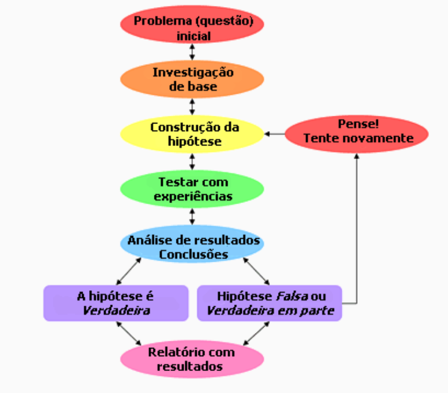
Método Científico
1. Pergunta: Como as modificações da paisagem (perda e fragmentação de habitat) afetam as comunidades de mamíferos?
Método Científico
2. Coleta dos dados
Ir para campo, anotar e/ou medir diversas variáveis, caderno de campo, instrumentos, sorte, mosquitos, carrapatos….
Método Científico
2. Coleta dos dados
Ir para campo, anotar e/ou medir diversas variáveis, caderno de campo, instrumentos, sorte, mosquitos, carrapatos….
Voltar do campo, com cadernos, planilhas, câmeras…
Planilhar dados, visualizar fotos, identificar os bichos, e café, muito, café…
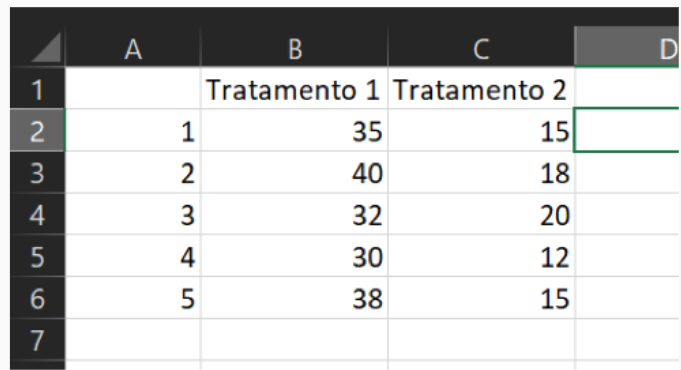
Método Científico
2. Coleta dos dados
Ir para campo, anotar e/ou medir diversas variáveis, caderno de campo, instrumentos, sorte, mosquitos, carrapatos….
Voltar do campo, com cadernos, planilhas, câmeras…
Planilhar dados, visualizar fotos, identificar os bichos, e café, muito, café…
Método Científico
3. Modelos estatísticos
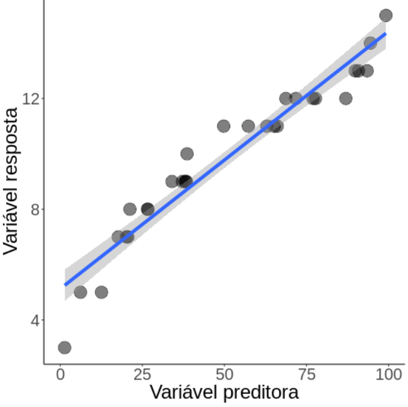
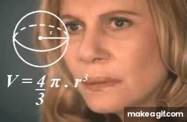
Método Científico
3. Modelos estatísticos
E por que eu preciso fazer um modelo estatístico?
Método Científico
3. Modelos estatísticos
E por que eu preciso fazer um modelo estatístico?
É possível coletar todos os dados em campo?
Método Científico
3. Modelos estatísticos
E por que eu preciso fazer um modelo estatístico?
É possível coletar todos os dados em campo?
Nunca!
Não há recursos financeiros, tempo ou pessoal para fazer censos em campo (salvo algumas exceções)
Método Científico
3. Modelos estatísticos
E por que eu preciso fazer um modelo estatístico?
É possível coletar todos os dados em campo?
Nunca!
Não há recursos financeiros, tempo ou pessoal para fazer censos em campo (salvo algumas exceções)
Por isso estimamos
Usamos uma parcela da realidade para tentar definir a ralidade em si
Análises Estatísticas
População, amostra e variável
População (estatística)
É o conjunto de todos os indivíduos ou elementos sobre os quais queremos tirar conclusões em um estudo.
Amostra
É uma parte da população, escolhida para ser estudada, que representa bem a população.
Variável (aleatória ou estatística)
É uma característica que observamos ou medimos nos indivíduos do estudo e que pode assumir diferentes valores.
Análises Estatísticas
População, amostra e variável
Variável preditora [independente] (X): varia independentemente e é coletada com o intuito de explicar a variável resposta
Variável resposta [dependente] (Y): espera-se que varie, i.e., seja dependente, da(s) variável(is) preditoras
Análises Estatísticas
População, amostra e variável
Variável preditora [independente] (X): varia independentemente e é coletada com o intuito de explicar a variável resposta
Variável resposta [dependente] (Y): espera-se que varie, i.e., seja dependente, da(s) variável(is) preditoras
Modelo estatístico: é a tentativa de explicar a variação de variáveis respostas (Y) em função de variáveis preditoras (X)
Análises Estatísticas
Modelo estatístico
E o que garante que podemos concluir nossas hipóteses a respeito da população a partir das amostras?
Análises Estatísticas
Modelo estatístico
E o que garante que podemos concluir nossas hipóteses a respeito da população a partir das amostras?
O delineamento amostral!!!
- Conjunto de métodos e decisões que garantam que a amostra seja parte representativa da população estatística
Análises Estatísticas
Modelo estatístico
E o que garante que podemos concluir nossas hipóteses a respeito da população a partir das amostras?
O delineamento amostral!!!
- Conjunto de métodos e decisões que garantam que a amostra seja parte representativa da população estatística
Depende de:
Pergunta
Grupo de pesquisa
Métodos de amostragem (parcela, transecto, busca ativa, cameras, pitfall)
Área de amostragem
Tamanho da amostra
Esforço de amostragem
Autocorrelação espacial e temporal
Pseudo-réplica
Análises Estatísticas
Univariada vs Multivariada
Univariada
- É a análise estatística de uma única variável resposta por vez.
Foca em descrever seu comportamento isolado, como distribuição, tendência central (média, mediana), dispersão (variância, desvio-padrão) e frequência.
Multivariada
- É a análise estatística de duas ou mais variáveis repostas simultaneamente. Busca entender relações, associações, padrões ou estruturas entre variáveis.
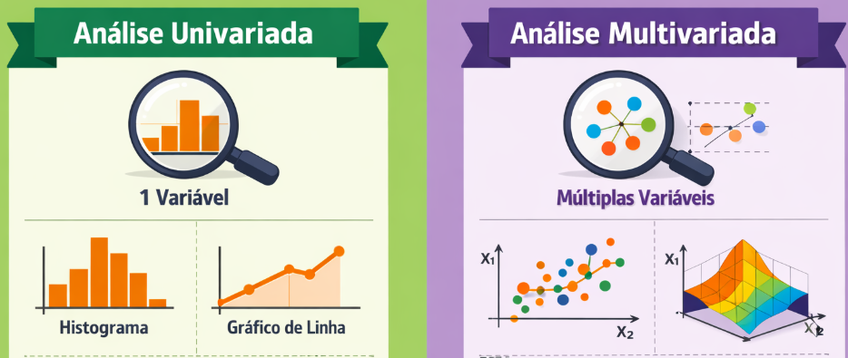
Análises Estatísticas
Nosso foco: Univariada
É a análise estatística de uma única variável resposta por vez.
Foca em descrever seu comportamento isolado, como distribuição, tendência central (média, mediana), dispersão (variância, desvio-padrão) e frequência.
Análises Estatísticas
Pacotes necessários
Três Tipos de Análise Estatística
1. Estatística Descritiva 📊
Objetivo: Resumir e descrever os dados
Pergunta: “Como são meus dados?”
Ferramentas:
Medidas de tendência central,Medidas de dispersãoeCorrelaçãoExemplo: “A altura média das árvores é 15m com DP de 3m”
Três Tipos de Análise Estatística
1. Estatística Descritiva 📊
Objetivo: Resumir e descrever os dados
Pergunta: “Como são meus dados?”
Ferramentas:
Medidas de tendência central,Medidas de dispersãoeCorrelaçãoExemplo: “A altura média das árvores é 15m com DP de 3m”
2. Estatística Inferencial 🔍
Objetivo: Generalizar da amostra para a população
Pergunta: “Existem diferenças entre grupos?”
Ferramentas:
t-test,ANOVA,Chi-quadradoExemplo: “Área protegida tem mais espécies que área desmatada (p<0.001)”
Três Tipos de Análise Estatística
1. Estatística Descritiva 📊
Objetivo: Resumir e descrever os dados
Pergunta: “Como são meus dados?”
Ferramentas:
Medidas de tendência central,Medidas de dispersãoExemplo: “A altura média das árvores é 15m com DP de 3m”
2. Estatística Inferencial 🔍
Objetivo: Generalizar da amostra para a população
Pergunta: “Existem diferenças entre grupos?”
Ferramentas:
t-test,ANOVA,Chi-quadrado,eCorrelaçãoExemplo: “Área protegida tem mais espécies que área desmatada (p<0.001)”
3. Estatística Preditiva 🎯
Objetivo: Modelar relações e fazer predições
Pergunta: “Como X influencia Y?” ou “Qual valor de Y esperamos para X=10?”
Ferramentas:
Regressão linear,GLMExemplo: “Cada 1°C aumenta em 12% a abundância de espécies”
Três Tipos de Análise Estatística
1. Estatística Descritiva 📊
Objetivo: Resumir e descrever os dados
Pergunta: “Como são meus dados?”
Ferramentas:
Medidas de tendência central,Medidas de dispersãoeCorrelaçãoMedidas de tendência central:
minimo,máximo,média,medianaemodaMedidas de dispersão:
variância,desvio padrãoeerro padrão
Análises Estatísticas Descritivas
Iris dataset
Análises Estatísticas Descritivas
Iris dataset

Análises Estatísticas Descritivas
Minimo, Máximo, Média, Mediana, Moda
Menor e maior valor no conjunto de dados:
min()emax()- Valores Extremos
Análises Estatísticas Descritivas
Minimo, Máximo, Média, Mediana, Moda
A média é a soma de todos os valores dividida pelo número de observações.
mean()
A mediana é o valor central quando os dados estão ordenados.
median()
A moda é o valor mais frequente na amostra
Não existe uma função no R, por isso adaptamos
which.max(table())
Análises Estatísticas Descritivas
Medidas de tendência central e dispersão
A variância mede o quão espalhados os dados estão em relação à média, mas em unidades ao quadrado.
Quanto maior a variância, mais dispersos estão os dados.
Útil para cálculos matemáticos e estatísticos avançados.
Análises Estatísticas Descritivas
Medidas de tendência central e dispersão
A variância mede o quão espalhados os dados estão em relação à média, mas em unidades ao quadrado.
Quanto maior a variância, mais dispersos estão os dados.
Útil para cálculos matemáticos e estatísticos avançados.
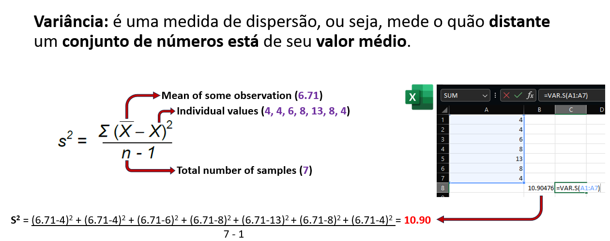
Análises Estatísticas Descritivas
Medidas de tendência central e dispersão
A variância mede o quão espalhados os dados estão em relação à média, mas em unidades ao quadrado.
Quanto maior a variância, mais dispersos estão os dados.
Útil para cálculos matemáticos e estatísticos avançados.
Análises Estatísticas Descritivas
Medidas de tendência central e dispersão
O desvio padrão é a raiz quadrada da variância, retornando às unidades originais dos dados. Mede o quão espalhados os dados estão em relação à média
- Para descrever a variabilidade dentro da sua amostra.
O erro padrão mede a incerteza da média em um grupo ou entre grupos de amostragem
- Não existe uma formula no R
- À medida que n aumenta, o erro padrão diminui

Estatística Descritiva
Medidas de tendência central e dispersão
O desvio padrão é a raiz quadrada da variância, retornando às unidades originais dos dados. Mede o quão espalhados os dados estão em relação à média
- Para descrever a variabilidade dentro da sua amostra.
O erro padrão mede a incerteza da média em um grupo ou entre grupos de amostragem
- Não existe uma formula no R
- À medida que n aumenta, o erro padrão diminui
Análises Estatísticas Descritivas
No tidyverse: Minimo, Máximo, Média, Mediana, Moda
# Estatísticas descritivas por grupo
iris %>%
dplyr::summarise(
n = n(),
min_sepala = min(Sepal.Length),
max_sepala = max(Sepal.Length),
media_sepala = mean(Sepal.Length),
mediana_sepala = median(Sepal.Length),
var_sepala = var(Sepal.Length),
dp_sepala = sd(Sepal.Length),
se_sepala = (sd(Sepal.Length) / sqrt(n()))
) n min_sepala max_sepala media_sepala mediana_sepala var_sepala dp_sepala
1 150 4.3 7.9 5.843333 5.8 0.6856935 0.8280661
se_sepala
1 0.06761132Análises Estatísticas Descritivas
No tidyverse: Minimo, Máximo, Média, Mediana, Moda
agrupando por espécies
# Estatísticas descritivas por grupo
iris %>%
dplyr::group_by(Species) %>%
dplyr::summarise(
n = n(),
min_sepala = min(Sepal.Length),
max_sepala = max(Sepal.Length),
media_sepala = mean(Sepal.Length),
mediana_sepala = median(Sepal.Length),
var_sepala = var(Sepal.Length),
dp_sepala = sd(Sepal.Length),
se_sepala = (sd(Sepal.Length) / sqrt(n()))
) %>%
dplyr::ungroup()# A tibble: 3 × 9
Species n min_sepala max_sepala media_sepala mediana_sepala var_sepala
<fct> <int> <dbl> <dbl> <dbl> <dbl> <dbl>
1 setosa 50 4.3 5.8 5.01 5 0.124
2 versicolor 50 4.9 7 5.94 5.9 0.266
3 virginica 50 4.9 7.9 6.59 6.5 0.404
# ℹ 2 more variables: dp_sepala <dbl>, se_sepala <dbl>Análises Estatísticas Descritivas
Visualização - Histograma
Quais classes de valores são mais infladas
Quais são os valores extremos, e quão abundante eles são
Análises Estatísticas Descritivas
Visualização - Histograma
Quais classes de valores são mais infladas
Quais são os valores extremos, e quão abundante eles são
Análises Estatísticas Inferenciais
Correlação entre variáveis
Correlação mede o grau de associação entre duas variáveis numéricas.
- Quando X aumenta, Y tende a aumentar ou diminuir?
- Essa relação é forte, fraca ou inexistente?
Quando você tem mais de duas variáveis, calcular correlação par a par gera uma matriz de correlação.
Usa a função cor() do pacote stats
Se informa o método usado,
pearson: relação linear e todas variáveis paramétricas (normal)spearman: relação monotônica, lineares ou com curvas, não-paramétricas (não normal)
Análises Estatísticas Inferenciais
Correlação entre variáveis e Heatmap
Todas as variáveis estão correlacionadas em certo ponto, mas quanto é isso?
Vamos testar para aspectos das pétalas do dataset iris
Testamos a normalidade primeiro usando o teste de Shapiro-Francia
Se forem todas normais vamos de Pearson, se não vamos de Spearman
Análises Estatísticas Inferenciais
Correlação entre variáveis e Heatmap
Todas as variáveis estão correlacionadas em certo ponto, mas quanto é isso?
Vamos testar para aspectos das pétalas do dataset iris
Testamos a normalidade primeiro usando o teste de Shapiro-Francia
Se forem todas normais vamos de Pearson, se não vamos de Spearman
Análises Estatísticas Inferenciais
Correlação entre variáveis e Heatmap
Todas as variáveis estão correlacionadas em certo ponto, mas quanto é isso?
Vamos testar para aspectos das pétalas do dataset iris
Função cor() testa a correlação
Sepal.Length Sepal.Width Petal.Length Petal.Width
Sepal.Length 1.0000000 -0.1667777 0.8818981 0.8342888
Sepal.Width -0.1667777 1.0000000 -0.3096351 -0.2890317
Petal.Length 0.8818981 -0.3096351 1.0000000 0.9376668
Petal.Width 0.8342888 -0.2890317 0.9376668 1.0000000
Análises Estatísticas Inferenciais
Teste de correlação entre vaviáveis
Usamos a função cor.test() para testar a hipótese de correlação
Análises Estatísticas Inferenciais
Teste de correlação entre vaviáveis
Usamos a função cor.test() para testar a hipótese de correlação
Pearson's product-moment correlation
data: iris$Sepal.Length and iris$Petal.Length
t = 21.646, df = 148, p-value < 2.2e-16
alternative hypothesis: true correlation is not equal to 0
95 percent confidence interval:
0.8270363 0.9055080
sample estimates:
cor
0.8717538 Interpretação: Correlação forte e positiva (r = 0.87) entre comprimento de sépala e pétala (p < 0.001)
IMPORTANTE: Correlação ≠ Causação! Pode haver variáveis confundidoras.
Análises Estatísticas Inferenciais
Teste de correlação entre vaviáveis
Usamos a função cor.test() para testar a hipótese de correlação
Pearson's product-moment correlation
data: iris$Sepal.Length and iris$Petal.Length
t = 21.646, df = 148, p-value < 2.2e-16
alternative hypothesis: true correlation is not equal to 0
95 percent confidence interval:
0.8270363 0.9055080
sample estimates:
cor
0.8717538 Interpretação: Correlação forte e positiva (r = 0.87) entre comprimento de sépala e pétala (p < 0.001)
IMPORTANTE: Correlação ≠ Causação! Pode haver variáveis confundidoras.
Coeficiente de correlação (r ou rho): Golden rule
r/rho = 1: correlação positiva perfeitar/rho = 0: sem correlação linearr/rho = -1: correlação negativa perfeita|r/rho| > 0.7: correlação forte|r/rho| = 0.3-0.7: correlação moderada|r/rho| < 0.3: correlação fraca
Como Escolher o Teste Estatístico?
Fluxograma de decisão:
- Quantas variáveis?
- 1 variável → Teste de uma amostra
- 2 variáveis → Teste de associação/comparação
- 3+ variáveis → Modelos multivariados
- Tipo de variáveis?
- Categórica vs Categórica → Chi-quadrado
- Contínua vs Categórica (2 grupos) → t-test
- Contínua vs Categórica (3+ grupos) → ANOVA
- Contínua vs Contínua → Correlação / Regressão
- Pressupostos atendidos?
- Sim → Teste paramétrico
- Não → Teste não-paramétrico ou transformação
- Objetivo?
- Comparar grupos → ANOVA, t-test
- Predizer valores → Regressão, GLM
Testes Paramétricos vs Não-Paramétricos
| Situação | Paramétrico | Não-Paramétrico |
|---|---|---|
| Comparar 2 grupos | t-test | Mann-Whitney U (Wilcoxon) |
| Comparar 3+ grupos | ANOVA | Kruskal-Wallis |
| Dados pareados | t-test pareado | Wilcoxon signed-rank |
| Correlação | Pearson | Spearman / Kendall |
Quando usar não-paramétricos?
- Dados não-normais (mesmo após transformação)
- Outliers extremos
- Amostras pequenas (n < 30)
- Dados ordinais (ex: escala Likert)
Vantagens paramétricos: Mais poder estatístico quando pressupostos são atendidos
Vantagens não-paramétricos: Mais robustos a violações
Estatística Inferencial
O que é?
Fazer inferências sobre uma população a partir de uma amostra
Testar hipóteses sobre diferenças entre grupos
Avaliar se as diferenças observadas são estatisticamente significativas
Testes paramétricos: assumem distribuição normal dos dados
Testes não-paramétricos: não assumem distribuição específica
Estatística Inferencial
Pressupostos dos testes paramétricos
Antes de rodar os testes, devemos verificar:
Normalidade: os dados seguem distribuição normal?
Homogeneidade de variâncias (homocedasticidade): as variâncias são iguais entre grupos?
Independência: as observações são independentes?
Ausência de outliers extremos
Por que verificar pressupostos?
1. Normalidade
- Testes paramétricos (t-test, ANOVA) assumem distribuição normal
- Se violada: taxa de erro Tipo I inflada (falsos positivos)
- Consequência: podemos encontrar diferenças que não existem!
- Solução: transformação de dados ou testes não-paramétricos
2. Homocedasticidade
- Variâncias desiguais afetam a estimativa do erro padrão
- Consequência: intervalos de confiança e p-values incorretos
- Grupos com maior variância têm influência desproporcional
- Solução: correção de Welch, transformação ou testes robustos
Por que verificar pressupostos?
3. Independência
- Observações não independentes violam a lógica dos testes
- Exemplos de dependência: medidas repetidas, hierarquia espacial/temporal
- Consequência: subestimação do erro padrão → p-values artificialmente baixos
- Solução: modelos mistos, análises de séries temporais
4. Outliers extremos
- Valores extremos podem distorcer médias e aumentar variância
- Consequência: perda de poder estatístico, resultados enviesados
- Podem indicar erros de medição ou processos biológicos distintos
- Solução: investigar, transformar dados ou usar métodos robustos
Resumo: Pressupostos garantem que os testes façam o que prometem!
Entendendo Distribuições
O que é uma distribuição?
Descreve como os valores de uma variável estão distribuídos
Mostra a frequência de cada valor ou intervalo
Fundamental para escolher o teste estatístico adequado
Diferentes processos biológicos geram diferentes distribuições
Distribuição Normal (Gaussiana)
set.seed(123)
dados_normal <- tibble(valor = rnorm(1000, mean = 100, sd = 15))
ggplot(dados_normal, aes(x = valor)) +
geom_histogram(aes(y = after_stat(density)), bins = 30,
fill = "steelblue", alpha = 0.7) +
geom_density(color = "red", size = 1.5) +
theme_minimal() +
labs(title = "Distribuição Normal (Curva em Sino)",
x = "Valor", y = "Densidade") +
annotate("text", x = 100, y = 0.025,
label = "Simétrica\nMédia = Mediana = Moda",
size = 5, color = "darkblue")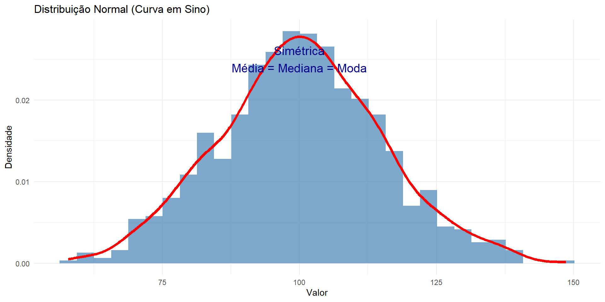
Características: Simétrica, forma de sino, média = mediana = moda
Distribuição Assimétrica à Direita
set.seed(123)
dados_direita <- tibble(valor = rexp(1000, rate = 0.5))
ggplot(dados_direita, aes(x = valor)) +
geom_histogram(aes(y = after_stat(density)), bins = 30,
fill = "coral", alpha = 0.7) +
geom_density(color = "red", size = 1.5) +
theme_minimal() +
labs(title = "Distribuição Assimétrica à Direita (Positive Skew)",
subtitle = "Cauda longa para a direita",
x = "Valor", y = "Densidade") +
annotate("text", x = 6, y = 0.3,
label = "Média > Mediana\nDados concentrados à esquerda\nValores extremos à direita",
size = 4.5, color = "darkred")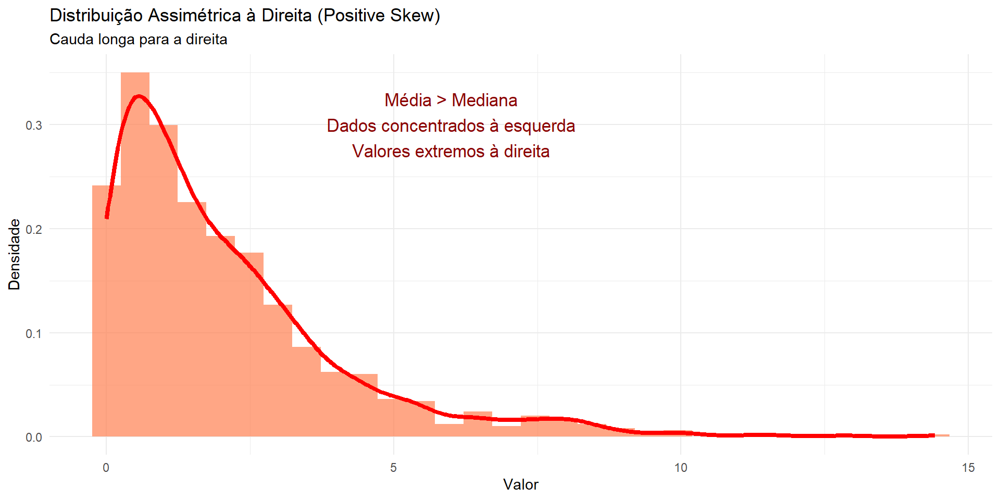
Exemplos: Renda, tamanho corporal de espécies, contagem de sementes dispersas
Distribuição Assimétrica à Esquerda
set.seed(123)
dados_esquerda <- tibble(valor = 10 - rexp(1000, rate = 0.5))
ggplot(dados_esquerda, aes(x = valor)) +
geom_histogram(aes(y = after_stat(density)), bins = 30,
fill = "mediumpurple", alpha = 0.7) +
geom_density(color = "red", size = 1.5) +
theme_minimal() +
labs(title = "Distribuição Assimétrica à Esquerda (Negative Skew)",
subtitle = "Cauda longa para a esquerda",
x = "Valor", y = "Densidade") +
annotate("text", x = 4, y = 0.3,
label = "Média < Mediana\nDados concentrados à direita\nValores extremos à esquerda",
size = 4.5, color = "purple4")
Exemplos: Taxa de sobrevivência (próxima de 100%), idade de morte (muitos morrem velhos)
Distribuição Bimodal
set.seed(123)
dados_bimodal <- tibble(
valor = c(rnorm(500, mean = 50, sd = 5),
rnorm(500, mean = 80, sd = 5))
)
ggplot(dados_bimodal, aes(x = valor)) +
geom_histogram(aes(y = after_stat(density)), bins = 30,
fill = "forestgreen", alpha = 0.7) +
geom_density(color = "red", size = 1.5) +
theme_minimal() +
labs(title = "Distribuição Bimodal",
subtitle = "Dois picos distintos",
x = "Valor", y = "Densidade") +
annotate("text", x = 65, y = 0.05,
label = "Indica presença de\nDOIS GRUPOS distintos",
size = 5, color = "darkgreen")
Exemplos: Dimorfismo sexual (machos e fêmeas), dados de duas populações misturadas
Distribuição Uniforme
set.seed(123)
dados_uniforme <- tibble(valor = runif(1000, min = 0, max = 100))
ggplot(dados_uniforme, aes(x = valor)) +
geom_histogram(aes(y = after_stat(density)), bins = 30,
fill = "gold", alpha = 0.7) +
geom_density(color = "red", size = 1.5) +
theme_minimal() +
labs(title = "Distribuição Uniforme",
subtitle = "Todos os valores têm probabilidade igual",
x = "Valor", y = "Densidade") +
annotate("text", x = 50, y = 0.012,
label = "Sem padrão aparente\nTodos valores igualmente prováveis",
size = 5, color = "darkorange")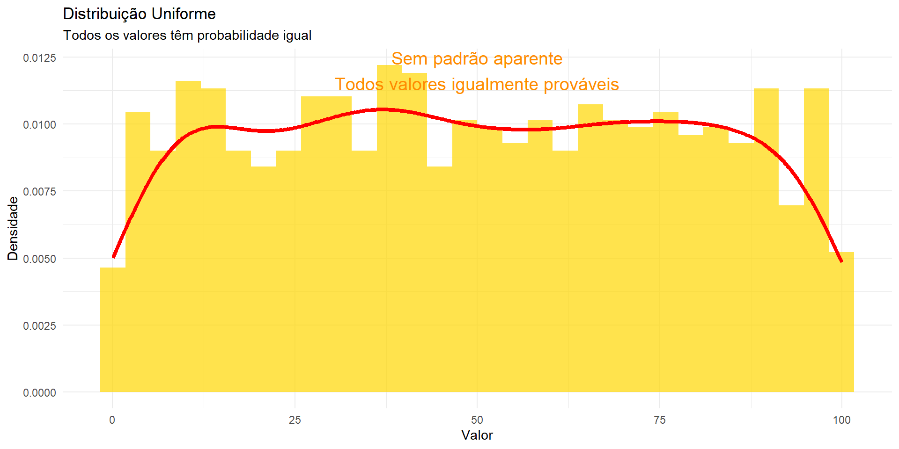
Exemplos: Números aleatórios, direção de movimento de animais sem preferência
Distribuição de Poisson
set.seed(123)
dados_poisson <- tibble(valor = rpois(1000, lambda = 5))
ggplot(dados_poisson, aes(x = valor)) +
geom_histogram(aes(y = after_stat(density)), bins = 15,
fill = "skyblue", alpha = 0.7) +
theme_minimal() +
labs(title = "Distribuição de Poisson",
subtitle = "Para dados de contagem",
x = "Contagem", y = "Densidade") +
annotate("text", x = 10, y = 0.15,
label = "Valores discretos (inteiros)\nNúmero de eventos\nMédia ≈ Variância",
size = 5, color = "darkblue")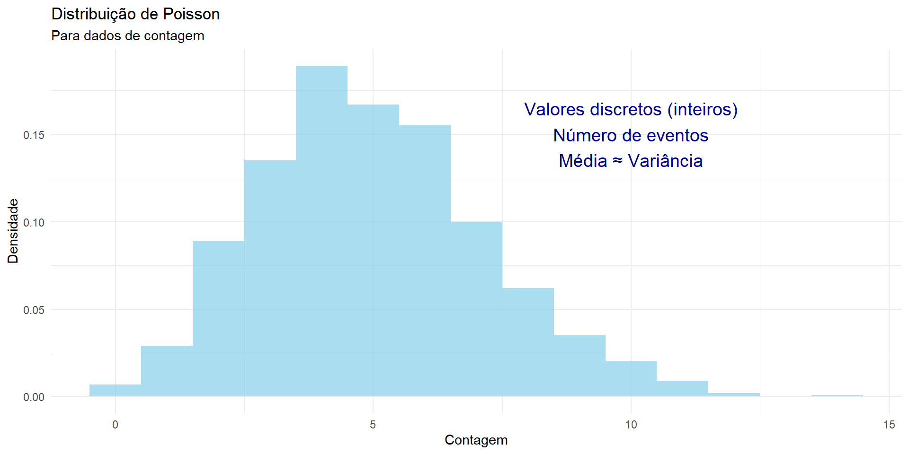
Exemplos: Número de espécies por parcela, contagem de sementes, avistamentos de animais
Implicações das Distribuições
| Distribuição | Usar | Evitar | Solução se Violado |
|---|---|---|---|
| Normal | t-test, ANOVA, LM | - | Transformação, testes não-paramétricos |
| Assimétrica | - | Testes paramétricos | Log-transformação, GLM |
| Bimodal | - | Qualquer teste simples | Analisar grupos separadamente |
| Poisson | GLM Poisson | LM, t-test | Binomial Negativa se overdispersion |
Dica: Sempre visualize seus dados ANTES de escolher o teste!
Teste de Normalidade
Shapiro-Wilk Test
# A tibble: 3 × 4
Species variable statistic p
<fct> <chr> <dbl> <dbl>
1 setosa Sepal.Length 0.978 0.460
2 versicolor Sepal.Length 0.978 0.465
3 virginica Sepal.Length 0.971 0.258Interpretação:
- H0: os dados seguem distribuição normal
- Se p > 0.05: não rejeitamos H0 (dados são normais)
- Se p < 0.05: rejeitamos H0 (dados não são normais)
Teste de Normalidade
Q-Q Plot
Teste de Homogeneidade de Variâncias
Levene’s Test
Levene's Test for Homogeneity of Variance (center = median)
Df F value Pr(>F)
group 2 6.3527 0.002259 **
147
---
Signif. codes: 0 '***' 0.001 '**' 0.01 '*' 0.05 '.' 0.1 ' ' 1Interpretação:
- H0: as variâncias são homogêneas entre grupos
- Se p > 0.05: não rejeitamos H0 (variâncias homogêneas)
- Se p < 0.05: rejeitamos H0 (variâncias heterogêneas - heterocedasticidade)
Se houver heterocedasticidade: usar correção de Welch ou transformação de dados
Chi-Quadrado (χ²)
Quando usar?
Testar associação entre duas variáveis categóricas
Testar se as frequências observadas diferem das esperadas
Pressupostos:
Variáveis categóricas
Frequências esperadas ≥ 5 em cada célula
Observações independentes
Chi-Quadrado (χ²)
Exemplo: Teste de independência
# Criar dados categóricos - tamanho de sépala
dados_cat <- iris %>%
mutate(Tamanho = case_when(
Sepal.Length < 5.5 ~ "Pequena",
Sepal.Length < 6.5 ~ "Média",
TRUE ~ "Grande"
))
# Tabela de contingência
tabela <- table(dados_cat$Species, dados_cat$Tamanho)
tabela
Grande Média Pequena
setosa 0 5 45
versicolor 9 35 6
virginica 26 23 1Chi-Quadrado (χ²)
Teste e interpretação
Chi-Quadrado (χ²)
Visualização
Teste t (t-test)
Quando usar?
Comparar médias de dois grupos
Teste t de Student (variâncias homogêneas)
Teste t de Welch (variâncias heterogêneas)
Pressupostos:
Variável resposta contínua
Distribuição normal dos dados
Homogeneidade de variâncias (teste de Student)
Observações independentes
Teste t
Exemplo: Comparando duas espécies
# Filtrar apenas duas espécies
dados_2sp <- iris %>%
filter(Species %in% c("setosa", "versicolor"))
# Verificar normalidade
dados_2sp %>%
group_by(Species) %>%
shapiro_test(Sepal.Length)# A tibble: 2 × 4
Species variable statistic p
<fct> <chr> <dbl> <dbl>
1 setosa Sepal.Length 0.978 0.460
2 versicolor Sepal.Length 0.978 0.465Teste t
Verificação de pressupostos
Levene's Test for Homogeneity of Variance (center = median)
Df F value Pr(>F)
group 1 8.1727 0.005196 **
98
---
Signif. codes: 0 '***' 0.001 '**' 0.01 '*' 0.05 '.' 0.1 ' ' 1Pressupostos atendidos! Podemos usar o teste t de Student
Teste t
Realizando o teste
Two Sample t-test
data: Sepal.Length by Species
t = -10.521, df = 98, p-value < 2.2e-16
alternative hypothesis: true difference in means between group setosa and group versicolor is not equal to 0
95 percent confidence interval:
-1.1054165 -0.7545835
sample estimates:
mean in group setosa mean in group versicolor
5.006 5.936 Interpretação: Diferença significativa no comprimento de sépala entre setosa e versicolor (t = -10.52, p < 0.001)
Teste t
Tamanho de efeito (Cohen’s d)
Cohen's d | 95% CI
--------------------------
-2.10 | [-2.59, -1.61]
- Estimated using pooled SD.Interpretação do Cohen’s d:
- 0.2 = efeito pequeno
- 0.5 = efeito médio
- 0.8 = efeito grande
Efeito grande (d = 2.10) - diferença biologicamente relevante!
Teste t
Visualização
ggplot(dados_2sp, aes(x = Species, y = Sepal.Length, fill = Species)) +
geom_violin(alpha = 0.5) +
geom_boxplot(width = 0.2, alpha = 0.7) +
geom_jitter(width = 0.1, alpha = 0.3) +
theme_minimal() +
labs(x = "Espécie",
y = "Comprimento da Sépala (cm)",
title = "Comparação entre duas espécies") +
theme(legend.position = "none")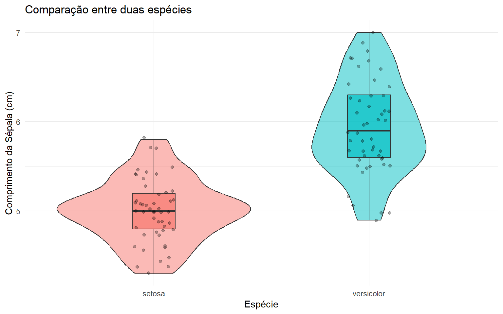
ANOVA (Análise de Variância)
Quando usar?
Comparar médias de três ou mais grupos
Extensão do teste t para múltiplos grupos
Pressupostos:
Variável resposta contínua
Distribuição normal dos resíduos
Homogeneidade de variâncias
Observações independentes
Tipos:
One-way ANOVA: um fator
Two-way ANOVA: dois fatores (+ interação)
ANOVA
Verificação de pressupostos
# A tibble: 3 × 4
Species variable statistic p
<fct> <chr> <dbl> <dbl>
1 setosa Sepal.Length 0.978 0.460
2 versicolor Sepal.Length 0.978 0.465
3 virginica Sepal.Length 0.971 0.258Levene's Test for Homogeneity of Variance (center = median)
Df F value Pr(>F)
group 2 6.3527 0.002259 **
147
---
Signif. codes: 0 '***' 0.001 '**' 0.01 '*' 0.05 '.' 0.1 ' ' 1Pressupostos atendidos! Podemos prosseguir com ANOVA
ANOVA
Realizando a ANOVA
# Modelo ANOVA
modelo_anova <- aov(Sepal.Length ~ Species, data = iris)
# Resultados
summary(modelo_anova) Df Sum Sq Mean Sq F value Pr(>F)
Species 2 63.21 31.606 119.3 <2e-16 ***
Residuals 147 38.96 0.265
---
Signif. codes: 0 '***' 0.001 '**' 0.01 '*' 0.05 '.' 0.1 ' ' 1Interpretação: Existe diferença significativa no comprimento de sépala entre as espécies (F = 119.3, p < 0.001)
ANOVA
Diagnóstico dos resíduos

ANOVA - Testes Post-hoc
Por quê?
ANOVA apenas indica que existe diferença entre grupos
Não diz quais grupos diferem entre si
Testes post-hoc fazem comparações múltiplas controlando erro tipo I
Testes comuns:
Tukey HSD: comparações entre todos os pares
Bonferroni: mais conservador
Dunnett: comparar grupos vs. controle
ANOVA - Teste de Tukey
Tukey multiple comparisons of means
95% family-wise confidence level
Fit: aov(formula = Sepal.Length ~ Species, data = iris)
$Species
diff lwr upr p adj
versicolor-setosa 0.930 0.6862273 1.1737727 0
virginica-setosa 1.582 1.3382273 1.8257727 0
virginica-versicolor 0.652 0.4082273 0.8957727 0ANOVA - Teste de Tukey
Visualização
ANOVA - Teste de Tukey
Visualização com letras
# Calcular médias e grupos
tukey_letras <- iris %>%
tukey_hsd(Sepal.Length ~ Species) %>%
add_significance() %>%
add_xy_position()
ggplot(iris, aes(x = Species, y = Sepal.Length)) +
geom_boxplot(aes(fill = Species), alpha = 0.5) +
stat_summary(fun = mean, geom = "point", shape = 23,
size = 3, fill = "red") +
theme_minimal() +
labs(y = "Comprimento da Sépala (cm)", x = "Espécie") +
theme(legend.position = "none")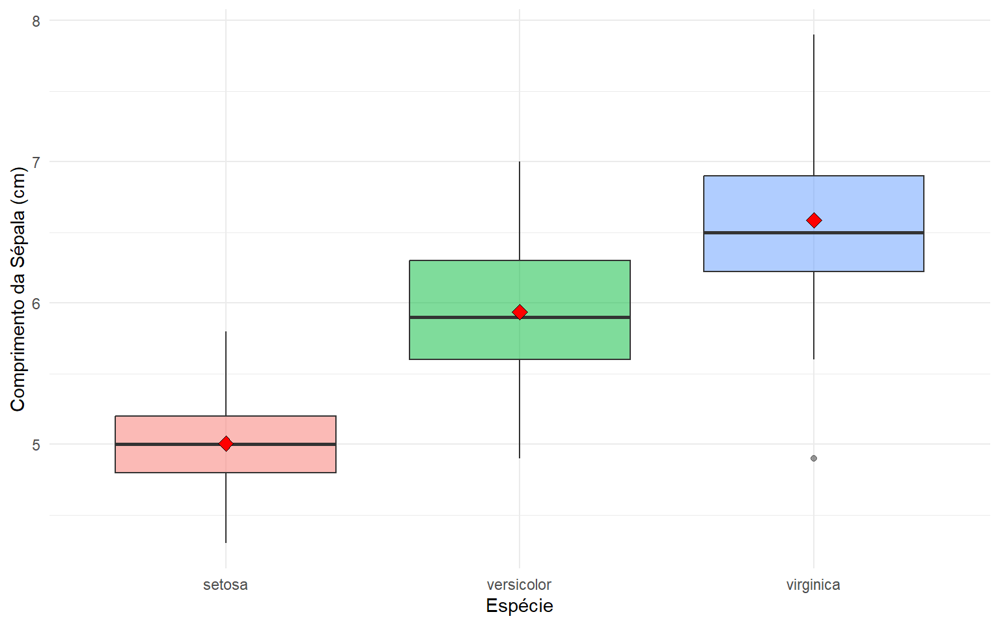
ANOVA - Two-way
Com dois fatores
# Criar segundo fator (exemplo didático)
dados_2way <- iris %>%
mutate(Tratamento = rep(c("Controle", "Tratado"), length.out = n()))
# ANOVA two-way
modelo_2way <- aov(Sepal.Length ~ Species * Tratamento,
data = dados_2way)
summary(modelo_2way) Df Sum Sq Mean Sq F value Pr(>F)
Species 2 63.21 31.606 118.429 <2e-16 ***
Tratamento 1 0.00 0.002 0.006 0.937
Species:Tratamento 2 0.52 0.262 0.982 0.377
Residuals 144 38.43 0.267
---
Signif. codes: 0 '***' 0.001 '**' 0.01 '*' 0.05 '.' 0.1 ' ' 1ANOVA - Two-way
Gráfico de interação
dados_2way %>%
group_by(Species, Tratamento) %>%
summarise(media = mean(Sepal.Length),
se = sd(Sepal.Length)/sqrt(n())) %>%
ggplot(aes(x = Species, y = media, color = Tratamento, group = Tratamento)) +
geom_point(size = 3) +
geom_line() +
geom_errorbar(aes(ymin = media - se, ymax = media + se), width = 0.2) +
theme_minimal() +
labs(y = "Comprimento da Sépala (cm)",
x = "Espécie",
title = "Interação entre Espécie e Tratamento")
Estatística Preditiva
O que é?
Modelar relações entre variáveis
Predizer valores de uma variável resposta a partir de preditoras
Entender quanto cada preditor influencia a resposta
Modelos:
Regressão Linear (lm): resposta contínua, relação linear
Modelos Lineares Generalizados (glm): diferentes distribuições da resposta
Regressão Linear (lm)
Quando usar?
Variável resposta contínua
Relação linear entre preditoras e resposta
Resíduos com distribuição normal
Pressupostos:
Linearidade: relação linear entre X e Y
Normalidade dos resíduos
Homocedasticidade: variância constante dos resíduos
Independência dos resíduos
Ausência de multicolinearidade (entre preditoras)
Regressão Linear
Modelo simples
# Regressão linear simples
modelo_lm <- lm(Petal.Length ~ Sepal.Length, data = iris)
summary(modelo_lm)
Call:
lm(formula = Petal.Length ~ Sepal.Length, data = iris)
Residuals:
Min 1Q Median 3Q Max
-2.47747 -0.59072 -0.00668 0.60484 2.49512
Coefficients:
Estimate Std. Error t value Pr(>|t|)
(Intercept) -7.10144 0.50666 -14.02 <2e-16 ***
Sepal.Length 1.85843 0.08586 21.65 <2e-16 ***
---
Signif. codes: 0 '***' 0.001 '**' 0.01 '*' 0.05 '.' 0.1 ' ' 1
Residual standard error: 0.8678 on 148 degrees of freedom
Multiple R-squared: 0.76, Adjusted R-squared: 0.7583
F-statistic: 468.6 on 1 and 148 DF, p-value: < 2.2e-16Regressão Linear
Interpretação dos coeficientes
Equação do modelo:
Petal.Length = -7.10 + 1.86 × Sepal.Length
Interpretação:
Intercepto (-7.10): valor de Y quando X = 0 (nem sempre tem interpretação biológica)
Coeficiente (1.86): para cada 1 cm de aumento na sépala, a pétala aumenta 1.86 cm
R² (0.76): o modelo explica 76% da variação nos dados
- R² = 1: modelo perfeito (explicação total)
- R² = 0: modelo não explica nada (predição = média)
- R² > 0.7: considerado bom em ecologia
p-value (< 0.001): o modelo é significativo
- Probabilidade de observar esses dados se não houvesse relação
- p < 0.05: evidência contra a hipótese nula (sem efeito)
Entendendo o p-value
O que é o p-value?
Probabilidade de obter os dados observados (ou mais extremos) se a hipótese nula fosse verdadeira
NÃO é a probabilidade da hipótese ser verdadeira!
Interpretação:
p < 0.05: Evidência contra H0 → resultado “estatisticamente significativo”
p > 0.05: Não rejeitamos H0 → sem evidência de efeito
Cuidados:
p-value não mede o tamanho do efeito (use Cohen’s d, R², etc.)
Significância estatística ≠ relevância biológica
p = 0.051 vs p = 0.049 → diferença arbitrária!
Boas práticas: Reporte sempre intervalos de confiança e tamanho de efeito junto com p-values
Regressão Linear
Diagnóstico do modelo
Regressão Linear
Interpretação dos gráficos diagnósticos
Residuals vs Fitted:
- Verifica linearidade e homocedasticidade
- Pontos devem estar aleatoriamente distribuídos em torno de zero
Q-Q Plot:
- Verifica normalidade dos resíduos
- Pontos devem seguir a linha diagonal
Scale-Location:
- Verifica homocedasticidade
- Linha horizontal indica variância constante
Residuals vs Leverage:
- Identifica outliers influentes
- Pontos fora da distância de Cook são problemáticos
Regressão Linear
Teste de pressupostos
Shapiro-Wilk normality test
data: residuals(modelo_lm)
W = 0.99437, p-value = 0.831Non-constant Variance Score Test
Variance formula: ~ fitted.values
Chisquare = 2.830956, Df = 1, p = 0.092463Interpretação:
Shapiro-Wilk (p > 0.05): resíduos são normais ✓
NCV Test (p > 0.05): homocedasticidade confirmada ✓
Nota: VIF (multicolinearidade) só é relevante para modelos com múltiplos preditores
Regressão Linear
Visualização do modelo
ggplot(iris, aes(x = Sepal.Length, y = Petal.Length)) +
geom_point(aes(color = Species), size = 3, alpha = 0.6) +
geom_smooth(method = "lm", se = TRUE, color = "black") +
theme_minimal() +
labs(x = "Comprimento da Sépala (cm)",
y = "Comprimento da Pétala (cm)",
title = "Regressão Linear: Pétala ~ Sépala",
subtitle = paste0("R² = ", round(summary(modelo_lm)$r.squared, 3)))
Regressão Linear Múltipla
# Modelo com múltiplos preditores
modelo_lm_mult <- lm(Petal.Length ~ Sepal.Length + Sepal.Width,
data = iris)
summary(modelo_lm_mult)
Call:
lm(formula = Petal.Length ~ Sepal.Length + Sepal.Width, data = iris)
Residuals:
Min 1Q Median 3Q Max
-1.25582 -0.46922 -0.05741 0.45530 1.75599
Coefficients:
Estimate Std. Error t value Pr(>|t|)
(Intercept) -2.52476 0.56344 -4.481 1.48e-05 ***
Sepal.Length 1.77559 0.06441 27.569 < 2e-16 ***
Sepal.Width -1.33862 0.12236 -10.940 < 2e-16 ***
---
Signif. codes: 0 '***' 0.001 '**' 0.01 '*' 0.05 '.' 0.1 ' ' 1
Residual standard error: 0.6465 on 147 degrees of freedom
Multiple R-squared: 0.8677, Adjusted R-squared: 0.8659
F-statistic: 482 on 2 and 147 DF, p-value: < 2.2e-16Regressão Linear Múltipla
Verificar multicolinearidade
Regressão Linear
Comparação de modelos
Analysis of Variance Table
Model 1: Petal.Length ~ Sepal.Length
Model 2: Petal.Length ~ Sepal.Length + Sepal.Width
Res.Df RSS Df Sum of Sq F Pr(>F)
1 148 111.459
2 147 61.437 1 50.022 119.69 < 2.2e-16 ***
---
Signif. codes: 0 '***' 0.001 '**' 0.01 '*' 0.05 '.' 0.1 ' ' 1 df AIC
modelo_lm 3 387.1350
modelo_lm_mult 4 299.7875Critérios de Seleção de Modelos
AIC (Akaike Information Criterion)
Mede o balanço entre ajuste do modelo e complexidade
Penaliza modelos com muitos parâmetros (evita overfitting)
Menor AIC = melhor modelo
Regra prática: ΔAIC > 2 indica diferença relevante
ANOVA de modelos aninhados
Compara modelos onde um é subconjunto do outro
Testa se adicionar variáveis melhora significativamente o modelo
Se p < 0.05: modelo mais complexo é significativamente melhor
R² ajustado
Penaliza adição de variáveis que não melhoram muito o ajuste
Use para comparar modelos com diferentes números de preditores
Modelos Lineares Generalizados (GLM)
Quando usar?
Quando a variável resposta não segue distribuição normal
Dados de contagem: Poisson, Binomial Negativa
Dados binários: Logística
Dados de proporção: Binomial
Componentes do GLM:
Distribuição da família exponencial (Normal, Poisson, Binomial, etc.)
Função de ligação (link function)
Preditor linear (combinação linear das variáveis explicativas)
Função de Ligação (Link Function)
O que é?
Conecta a média da variável resposta com o preditor linear
Garante que as predições estejam no intervalo válido
Permite modelar relações não-lineares entre X e Y
Exemplos práticos:
- Log link (Poisson): garante contagens positivas
- log(μ) = β₀ + β₁X → μ = exp(β₀ + β₁X)
- Logit link (Binomial): garante probabilidades entre 0 e 1
- logit(p) = β₀ + β₁X → p = 1/(1 + exp(-(β₀ + β₁X)))
- Identity link (Normal): relação direta e linear
- μ = β₀ + β₁X (regressão linear tradicional)
Por que importa? A escolha errada pode gerar predições impossíveis (ex: contagens negativas)!
GLM - Distribuições comuns
| Distribuição | Tipo de Dados | Função de Ligação | Exemplo |
|---|---|---|---|
| Gaussian | Contínua | Identity | Altura |
| Poisson | Contagem | Log | N° de espécies |
| Binomial | Binária | Logit | Presença/Ausência |
| Binomial | Proporção | Logit | Taxa de sucesso |
| Gamma | Contínua positiva | Log | Biomassa |
GLM - Poisson
Dados de contagem
# Criar dados de contagem (exemplo)
set.seed(123)
dados_count <- tibble(
temperatura = runif(100, 15, 35),
umidade = runif(100, 40, 90),
contagem = rpois(100, lambda = exp(-2 + 0.1 * temperatura + 0.02 * umidade))
)
head(dados_count)# A tibble: 6 × 3
temperatura umidade contagem
<dbl> <dbl> <int>
1 20.8 70.0 3
2 30.8 56.6 15
3 23.2 64.4 5
4 32.7 87.7 20
5 33.8 64.1 18
6 15.9 84.5 2GLM - Poisson
Ajustar o modelo
# Modelo Poisson
modelo_poisson <- glm(contagem ~ temperatura + umidade,
data = dados_count,
family = poisson(link = "log"))
summary(modelo_poisson)
Call:
glm(formula = contagem ~ temperatura + umidade, family = poisson(link = "log"),
data = dados_count)
Coefficients:
Estimate Std. Error z value Pr(>|z|)
(Intercept) -1.505446 0.273903 -5.496 3.88e-08 ***
temperatura 0.091568 0.006922 13.228 < 2e-16 ***
umidade 0.015957 0.002814 5.670 1.42e-08 ***
---
Signif. codes: 0 '***' 0.001 '**' 0.01 '*' 0.05 '.' 0.1 ' ' 1
(Dispersion parameter for poisson family taken to be 1)
Null deviance: 326.50 on 99 degrees of freedom
Residual deviance: 111.26 on 97 degrees of freedom
AIC: 476.12
Number of Fisher Scoring iterations: 4GLM - Poisson
Interpretação dos coeficientes
(Intercept) temperatura umidade
0.2219182 1.0958910 1.0160846 Interpretação:
Para cada 1°C de aumento na temperatura, a contagem aumenta em 11% (exp(0.10) = 1.11)
Para cada 1% de aumento na umidade, a contagem aumenta em 2% (exp(0.02) = 1.02)
GLM
Verificação de pressupostos - DHARMa

GLM
Testes de adequação do modelo

DHARMa nonparametric dispersion test via sd of residuals fitted vs.
simulated
data: simulationOutput
dispersion = 1.0816, p-value = 0.552
alternative hypothesis: two.sided
DHARMa bootstrapped outlier test
data: simulacao
outliers at both margin(s) = 0, observations = 100, p-value = 1
alternative hypothesis: two.sided
percent confidence interval:
0.00000 0.02525
sample estimates:
outlier frequency (expected: 0.0058 )
0 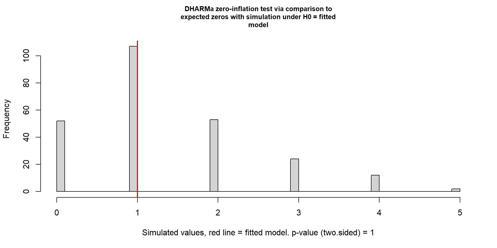
DHARMa zero-inflation test via comparison to expected zeros with
simulation under H0 = fitted model
data: simulationOutput
ratioObsSim = 0.72886, p-value = 1
alternative hypothesis: two.sidedInterpretando os Testes de Diagnóstico
Teste de Superdispersão (Overdispersion)
Verifica se a variância é maior que o esperado pela distribuição
p < 0.05: modelo está subdispersando (variância menor)
p > 0.05 E ratio > 1: modelo está superdispersando (variância maior)
Solução: usar Binomial Negativa ou modelo misto
Teste de Outliers
Detecta observações com resíduos extremos
p < 0.05: presença de outliers significativos
Ação: investigar se são erros de medição ou observações legítimas
Teste de Excesso de Zeros
Verifica se há mais zeros do que esperado pela distribuição
p < 0.05: modelo não captura bem os zeros
Solução: usar modelos Zero-Inflated (ZIP, ZINB)
Regra geral: Valores de p > 0.05 nos testes indicam que o modelo está adequado!
GLM - Overdispersion
O que é superdispersão (overdispersion)?
Quando a variância dos dados é maior que a esperada pelo modelo
Comum em dados de contagem
Como detectar?
Razão deviance/df > 1.5
Teste de DHARMa
Soluções:
Binomial Negativa: permite maior variância
Modelo misto: adiciona efeitos aleatórios
Quasi-Poisson: ajusta erros padrão
GLM - Binomial Negativa
library(MASS)
# Modelo Binomial Negativa
modelo_nb <- glm.nb(contagem ~ temperatura + umidade,
data = dados_count)
summary(modelo_nb)
Call:
glm.nb(formula = contagem ~ temperatura + umidade, data = dados_count,
init.theta = 131.8817654, link = log)
Coefficients:
Estimate Std. Error z value Pr(>|z|)
(Intercept) -1.497868 0.282807 -5.296 1.18e-07 ***
temperatura 0.091531 0.007128 12.841 < 2e-16 ***
umidade 0.015858 0.002914 5.442 5.27e-08 ***
---
Signif. codes: 0 '***' 0.001 '**' 0.01 '*' 0.05 '.' 0.1 ' ' 1
(Dispersion parameter for Negative Binomial(131.8818) family taken to be 1)
Null deviance: 308.71 on 99 degrees of freedom
Residual deviance: 105.81 on 97 degrees of freedom
AIC: 477.96
Number of Fisher Scoring iterations: 1
Theta: 132
Std. Err.: 347
2 x log-likelihood: -469.961 GLM - Comparação de modelos
df AIC
modelo_poisson 3 476.1200
modelo_nb 4 477.9613# Teste de razão de verossimilhança
lrtest <- anova(modelo_poisson, modelo_nb, test = "Chisq")
lrtestAnalysis of Deviance Table
Model 1: contagem ~ temperatura + umidade
Model 2: contagem ~ temperatura + umidade
Resid. Df Resid. Dev Df Deviance Pr(>Chi)
1 97 111.26
2 97 105.81 0 5.4463 Modelo Binomial Negativa é melhor (AIC menor)
GLM - Visualização
Efeitos do modelo

GLM - Visualização
Efeitos do modelo - Umidade

GLM - Visualização com sjPlot

GLM - Visualização com sjPlot
Efeitos marginais

GLM - Regressão Logística
Dados binários
# Criar dados binários
dados_bin <- iris %>%
mutate(grande = ifelse(Petal.Length > median(Petal.Length), 1, 0))
# Modelo logístico
modelo_logit <- glm(grande ~ Sepal.Length + Sepal.Width,
data = dados_bin,
family = binomial(link = "logit"))
summary(modelo_logit)
Call:
glm(formula = grande ~ Sepal.Length + Sepal.Width, family = binomial(link = "logit"),
data = dados_bin)
Coefficients:
Estimate Std. Error z value Pr(>|z|)
(Intercept) -24.8676 5.2044 -4.778 1.77e-06 ***
Sepal.Length 4.7560 0.8228 5.781 7.44e-09 ***
Sepal.Width -0.9321 0.6933 -1.345 0.179
---
Signif. codes: 0 '***' 0.001 '**' 0.01 '*' 0.05 '.' 0.1 ' ' 1
(Dispersion parameter for binomial family taken to be 1)
Null deviance: 207.944 on 149 degrees of freedom
Residual deviance: 75.819 on 147 degrees of freedom
AIC: 81.819
Number of Fisher Scoring iterations: 6GLM - Regressão Logística
Odds Ratio
(Intercept) Sepal.Length Sepal.Width
1.585347e-11 1.162813e+02 3.937108e-01 2.5 % 97.5 %
(Intercept) 1.413519e-16 1.305991e-07
Sepal.Length 2.880461e+01 7.586175e+02
Sepal.Width 8.722560e-02 1.402213e+00Interpretação:
Para cada 1 cm de aumento na sépala, as chances de ter pétala grande aumentam 8.4 vezes
Para cada 1 cm de aumento na largura da sépala, as chances diminuem 0.07 vezes
Entendendo Odds Ratio (OR)
O que é Odds Ratio?
Mede a razão das chances entre dois grupos ou níveis de uma variável
OR = 1: sem efeito (chances iguais)
OR > 1: aumento das chances (efeito positivo)
OR < 1: diminuição das chances (efeito negativo)
Exemplo prático:
OR = 2: as chances dobram
OR = 0.5: as chances são reduzidas pela metade
OR = 8.4: as chances são 8.4 vezes maiores
Conversão para porcentagem:
OR = 2 → aumento de 100% nas chances
OR = 1.5 → aumento de 50% nas chances
OR = 0.7 → diminuição de 30% nas chances [(1-0.7)×100]
Importante: OR ≠ Risco Relativo! OR tende a exagerar o efeito quando eventos são comuns.
GLM - Regressão Logística
Visualização
# Predições
pred_logit <- ggpredict(modelo_logit, terms = "Sepal.Length [all]")
ggplot(dados_bin, aes(x = Sepal.Length, y = grande)) +
geom_point(alpha = 0.3) +
geom_ribbon(data = pred_logit,
aes(x = x, y = predicted, ymin = conf.low, ymax = conf.high),
alpha = 0.2, fill = "blue") +
geom_line(data = pred_logit,
aes(x = x, y = predicted),
color = "blue", size = 1) +
theme_minimal() +
labs(x = "Comprimento da Sépala (cm)",
y = "Probabilidade de pétala grande",
title = "Regressão Logística")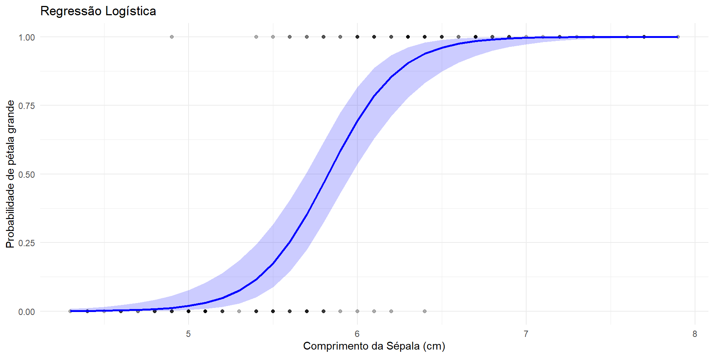
Resumo dos Modelos
| Modelo | Uso | Distribuição | Link | Pressupostos |
|---|---|---|---|---|
| lm | Resposta contínua | Normal | Identity | Linearidade, normalidade resíduos, homocedasticidade |
| glm Poisson | Contagem | Poisson | Log | Média = Variância |
| glm Neg. Binomial | Contagem c/ superdispersão | Neg. Binomial | Log | Overdispersion permitida |
| glm Logística | Binária | Binomial | Logit | Independência |
| glm Gamma | Contínua positiva | Gamma | Log | Valores > 0 |
Fluxo de Análise
1. Exploração dos dados
- Estatística descritiva
- Visualizações
- Correlações
2. Escolha do teste/modelo
- Tipo de variável resposta
- Tipo de preditoras
- Objetivo da análise
3. Verificação de pressupostos
- Normalidade, homocedasticidade, etc.
- Transformação se necessário
4. Ajuste do modelo
5. Diagnóstico
6. Interpretação e visualização
Boas Práticas
Sempre:
✓ Visualize seus dados antes de modelar
✓ Verifique pressupostos dos testes
✓ Reporte tamanho de efeito, não apenas p-value
✓ Use gráficos para comunicar resultados
✓ Interprete resultados no contexto biológico
Evite:
✗ Confiar cegamente em p-values
✗ Ignorar pressupostos violados
✗ “P-hacking” (testar múltiplos modelos até achar significância)
✗ Extrapolar além dos dados
Recursos Adicionais
Livros:
Statistical Rethinking - Richard McElreath
Regression and Other Stories - Gelman, Hill & Vehtari
Data Analysis Using Regression and Multilevel/Hierarchical Models - Gelman & Hill
Pacotes úteis:
performance: diagnóstico de modeloseasystats: conjunto de pacotes para estatísticaggeffects: visualização de efeitosemmeans: comparações post-hoc
Online:
Obrigado!
Dúvidas?
Email: seu.email@email.com
Website: souzayuri.github.io
Materiais do curso:
GitHub: seu-repositorio